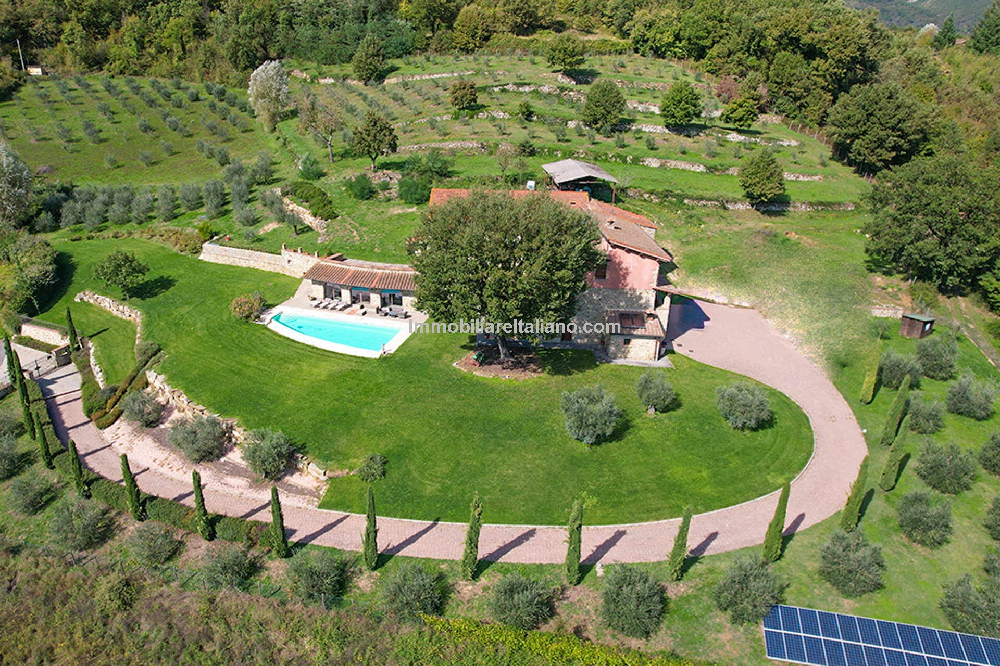

€1.000.000
Bibbiena (Casentino) · Tuscany · Italy
Habitable Casentino farmhouse villa with stone/brick, beams, terracotta and original fireplaces plus a verified built private 13×5 pool and pool house on 2.8 ha with olive grove - old mixed with comfortable renovation, not communal and not pool-possible. Two agricultural outbuildings remain to restore (secondary; main villa ready).
Opened 30 Sep 2026 on Immobiliare Italiano; asking €1.000.000; farmhouse villa ~285 m² (listing interiors total 731 m² including pool house and outbuildings); 4 beds / 3 baths; land ~2.8 ha; PV 5.9 kW; currently holiday-rented as independent villa. Not Sold. Near-miss caveat: outbuildings to restore. Not a bargain at €1.0M.
View listing